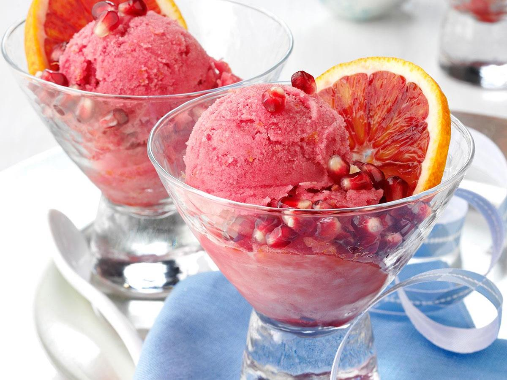

Pomegranate Sherbet

Description
TA welcome surprise after a heavy meal, this make-ahead sherbet requires very little lift. Gelatin and cream are the secret weapons for a super-creamy scoop. Feeling extra fancy? Serve it with fresh mint and shortbread cookies, such as Speculoos.
Ingredients
- 3 cups unsweetened pomegranate juice
- 1 cup sugar
- 3 tablespoons lemon juice
- 1 dash salt
- ¼ cup cold water
- 1 (.25 ounce) envelope unflavored gelatin
- 1 cup chilled whipping cream
Directions
- Stir together pomegranate juice, sugar, lemon juice, and salt in a large bowl. Chill, covered, 30 minutes.
- Put the cold water in a small saucepan and sprinkle with gelatin; let stand 1 minute. Cook, stirring, over low heat just until gelatin dissolves, about 2 minutes. Stir into pomegranate mixture. Add cream; beat with an electric hand mixer at medium speed until mixture is foamy, about 3 minutes.
- Freeze in an ice cream maker according to manufacturer's directions until sherbet reaches soft-serve consistency, 1 to 1 1/2 hours.
- Transfer to a 1- or 2-qt. freezer-safe container. Put a piece of plastic wrap directly on surface; cover and freeze at least 2 hours or up to 1 month.